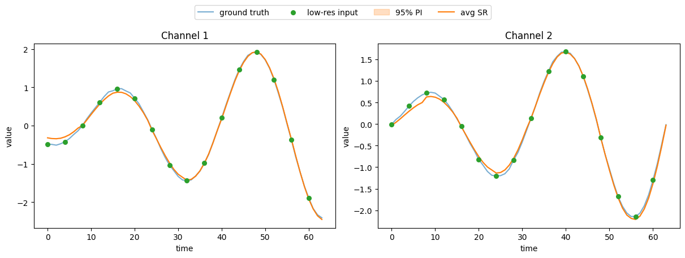

Time Series Super-Resolution
In this tutorial, we will go through how to perform time series super-resolution with GenTS models and datasets.
Problem setting
Given a low-resolution time series \(\mathbf{x}_{\text{lr}} \in \mathbb{R}^{(T / r) \times D}\), where \(r\) is the super-resolution factor, we are interested in learning the conditional distribution \(p(\mathbf{x}_{\text{hr}} \mid \mathbf{x}_{\text{lr}})\). From this distribution, we can sample possible high-resolution reconstructions \(\hat{\mathbf{x}}_{\text{hr}} \in \mathbb{R}^{T \times D}\).
Two downsampling strategies are supported:
subsample: take every \(r\)-th point from the original series
average: average every \(r\) consecutive points into one
Implementation
1. Import modules
[1]:
import torch
import matplotlib.pyplot as plt
from gents.dataset import Spiral2D
from gents.model import VanillaDDPM
from lightning import Trainer
/home/wcx/anaconda3/envs/gents/lib/python3.10/site-packages/tqdm/auto.py:21: TqdmWarning: IProgress not found. Please update jupyter and ipywidgets. See https://ipywidgets.readthedocs.io/en/stable/user_install.html
from .autonotebook import tqdm as notebook_tqdm
CUDA extension for cauchy multiplication not found. Install by going to extensions/cauchy/ and running `python setup.py install`. This should speed up end-to-end training by 10-50%
Falling back on slow Cauchy kernel. Install at least one of pykeops or the CUDA extension for efficiency.
Falling back on slow Vandermonde kernel. Install pykeops for improved memory efficiency.
2. Setup datamodule and model
Here, we set \(T=64\), and the super-resolution factor \(r=4\), so the low-resolution condition has length \(64/4=16\).
Note that condition='super_resolution', sr_factor and sr_type are required for both datamodule and model.
[2]:
sr_factor = 4
sr_type = "subsample" # or "average"
dm = Spiral2D(
seq_len=64,
batch_size=64,
data_dir="../data",
condition="super_resolution",
sr_factor=sr_factor,
sr_type=sr_type,
)
model = VanillaDDPM(
seq_len=dm.seq_len,
seq_dim=dm.seq_dim,
condition="super_resolution",
sr_factor=sr_factor,
sr_type=sr_type,
)
3. Training
Utilizing lightning/pytorch-lightning, one can easily set GPU devices, training epochs, callbacks, etc.
[3]:
trainer = Trainer(max_epochs=10, devices=[0], enable_progress_bar=False)
trainer.fit(model, dm)
GPU available: True (cuda), used: True
TPU available: False, using: 0 TPU cores
HPU available: False, using: 0 HPUs
You are using a CUDA device ('NVIDIA GeForce RTX 3080 Ti') that has Tensor Cores. To properly utilize them, you should set `torch.set_float32_matmul_precision('medium' | 'high')` which will trade-off precision for performance. For more details, read https://pytorch.org/docs/stable/generated/torch.set_float32_matmul_precision.html#torch.set_float32_matmul_precision
LOCAL_RANK: 0 - CUDA_VISIBLE_DEVICES: [0,1,2,3]
| Name | Type | Params | Mode
------------------------------------------
0 | backbone | DiT | 1.2 M | train
------------------------------------------
1.2 M Trainable params
1.0 K Non-trainable params
1.2 M Total params
4.703 Total estimated model params size (MB)
85 Modules in train mode
0 Modules in eval mode
`Trainer.fit` stopped: `max_epochs=10` reached.
4. Super-resolution on the test set
Here n_sample=10 means we sample \(\hat{\mathbf{x}}_{\text{hr}} \in \mathbb{R}^{T \times D}\) 10 times for each low-resolution input. The tensor shape of gen_data is [batch_size, T, D, n_sample].
[4]:
dm.setup("test")
real_data = torch.cat([batch["seq"] for batch in dm.test_dataloader()])
cond_data = torch.cat([batch["c"] for batch in dm.test_dataloader()])
gen_data = model.sample(
n_sample=10,
condition=cond_data,
)
print(f"Low-res condition shape: {cond_data.shape}")
print(f"Generated high-res shape: {gen_data.shape}")
Low-res condition shape: torch.Size([100, 16, 2])
Generated high-res shape: torch.Size([100, 64, 2, 10])
5. Visualization
We plot the ground truth high-resolution series and the super-resolution results (mean and 95% prediction interval).
[5]:
q = torch.tensor([0.05, 0.95])
gen_quantiles = torch.quantile(gen_data.cpu(), q, dim=-1)
gen_mean = gen_data.cpu().mean(dim=-1)
sample_id = torch.randint(0, len(real_data), ())
n_channel = min(3, real_data.shape[-1])
fig, axs = plt.subplots(1, n_channel, figsize=[12, 4], layout="constrained")
if n_channel == 1:
axs = [axs]
t_hr = range(real_data.shape[1])
t_lr = range(0, real_data.shape[1], sr_factor) # for subsample
for i in range(n_channel):
ax = axs[i]
# ground truth
ax.plot(t_hr, real_data[sample_id, :, i].cpu(), c="C0", label="ground truth", alpha=0.6)
# low-res condition
ax.scatter(t_lr[:cond_data.shape[1]], cond_data[sample_id, :, i].cpu(),
c="C2", zorder=5, s=30, label="low-res input")
# super-resolution output
ax.fill_between(t_hr, gen_quantiles[0, sample_id, :, i],
gen_quantiles[-1, sample_id, :, i],
color="C1", alpha=0.25, label="95% PI")
ax.plot(t_hr, gen_mean[sample_id, :, i], c="C1", label="avg SR")
ax.set_xlabel("time")
ax.set_ylabel("value")
ax.set_title(f"Channel {i + 1}")
fig.legend(*axs[0].get_legend_handles_labels(),
loc="upper center", ncol=4, bbox_to_anchor=(0.5, 1.12))
plt.show()
